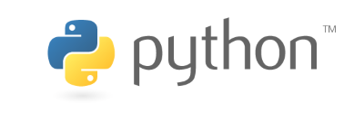

Python Programming Language
Python is a high-level programming language known for its simple and readable syntax. It was designed to help developers write clear and efficient code while reducing the complexity often found in lower-level languages. Because of its ease of use and flexibility, Python has become one of the most widely used programming languages in the world.

History of Python
Python was created by Guido van Rossum and first released in 1991. The language was designed with the goal of emphasizing readability and simplicity so that programmers could focus more on solving problems rather than managing complicated syntax.
Key Features of Python
Readable Syntax
Python uses a clear and straightforward syntax that closely resembles plain English. This makes the language easier to learn and understand, especially for beginners.
Open Source and Community Driven
Python is an open-source programming language that is developed and maintained by a global community of programmers. This open development model has helped the language grow rapidly and ensures that it continues to improve over time.
Versatility
Python can be used for many different types of applications. It supports multiple programming styles and can be applied to web development, automation, artificial intelligence, and many other areas of software development.
Common Uses of Python
Python is widely used in areas such as data science, machine learning, automation, and web development. It is also commonly used for scripting tasks and for teaching programming because its syntax is easy to read and understand.
Because of its simplicity and powerful ecosystem of libraries, Python continues to grow in popularity among both beginners and experienced developers.
Source: Python Institute - About Python